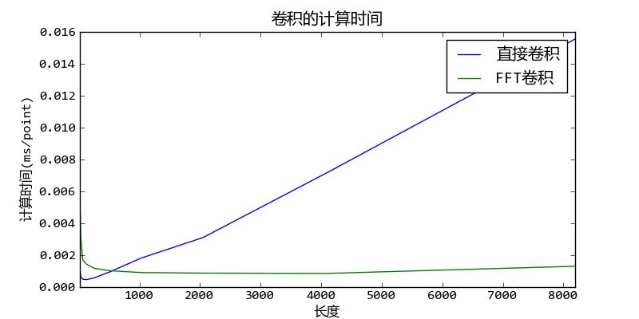

相关文档： 频域信号处理
直接卷积的复杂度为O(N*N)，FFT的复杂度为O(N*log(N))，此程序分别计算直接卷积和快速卷积的耗时曲线。请注意Y轴为每点的平均运算时间。
# -*- coding: utf-8 -*-
import numpy as np
import timeit
def fft_convolve(a,b):
n = len(a)+len(b)-1
N = 2**(int(np.log2(n))+1)
A = np.fft.fft(a, N)
B = np.fft.fft(b, N)
return np.fft.ifft(A*B)[:n]
if __name__ == "__main__":
from pylab import *
n_list = []
t1_list = []
t2_list = []
for n in xrange(4, 14):
N = 2**n
count = 10000**2 / N**2
if count > 10000: count = 10000
setup = """
import numpy as np
from __main__ import fft_convolve
a = np.random.rand(%s)
b = np.random.rand(%s)
""" % (N, N)
t1 = timeit.timeit("np.convolve(a,b)", setup, number=count)
t2 = timeit.timeit("fft_convolve(a,b)", setup, number=count)
t1_list.append(t1*1000/count/N)
t2_list.append(t2*1000/count/N)
n_list.append(N)
figure(figsize=(8,4))
plot(n_list, t1_list, label=u"直接卷积")
plot(n_list, t2_list, label=u"FFT卷积")
legend()
title(u"卷积的计算时间")
ylabel(u"计算时间(ms/point)")
xlabel(u"长度")
xlim(min(n_list),max(n_list))
show()